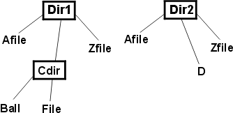
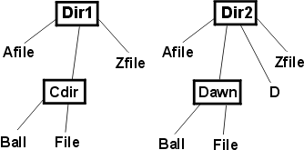

| Концепция: Каталог идей по тестированию |
 |
|
| Связанные элементы |
|---|
ВведениеПрограммирование во многом представляет собой использование одних и тех же механизмов в различных контекстах. Эти механизмы, как правило, представляют собой определенные структуры классов и данных (например, связанные списки, хэш-таблицы или реляционные базы данных) или действия (например, поиск, сортировка, создание временных файлов или создание нового окна браузера). Например, у двух реляционных баз данных со сведениями о клиентуре могут быть практически одни и те же характеристики, причем одна база может использоваться в качестве клише для создания другой. Интересная особенность таких клише заключается в том, что через них копируются и ошибки тоже. Люди редко изобретают новые изощренные ошибки при вставке данных в связанные списки. Гораздо чаще повторяются ошибки других людей, сделанные ранее. Например, при создании новых окон браузера часто допускаются следующие ошибки:
Поскольку ошибки в большинстве своем стандартны, их можно обнаружить с помощью стандартных идей по тестированию. Поместите идеи по тестированию в свой каталог для повторного использования. Как каталог идей по тестированию помогает находить ошибкиОдно из замечательных качеств каталога заключается в том, что одна идея может помощь найти несколько ошибок. Ниже приведен пример идеи, позволяющей найти две ошибки. Первая ошибка была допущена в компиляторе C. Компилятор можно вызывать с опциями в командной строке, например "-table", "-trace" или "-nolink". Эти опции можно сокращать до минимума, при котором они остаются однозначными. Например, вместо "-table" можно указать "-table". Однако нельзя указать "-t", поскольку теряется однозначность: эта опция может значить "-table" или "-trace". Внутри опции командной строки хранились в таблице:
Если в командной строке указана опция, компилятор пытается найти ее в таблице. Сначала компилятор находил первое совпадение: для "-t" это опция "-table". После этого компилятор просматривал остальные элементы таблицы и искал второе совпадение. Наличие второго совпадения означало ошибку, поскольку опция получалась неоднозначной. Просмотр таблицы был запрограммирован следующим образом:
Вы уже видите ошибку? Она не сразу бросается в глаза. Ошибка находится в операторе break. Этот оператор должен осуществлять выход из внешнего цикла при обнаружении второго совпадения, но в действительности он осуществляет выход из внутреннего цикла. Такое поведение программы равносильно тому, что второе совпадение не будет найдено, поскольку будет возвращаться индекс первого совпадения. Обратите внимание на то, что ошибку можно обнаружить только на опции, для которой в таблице будут два совпадения, например "-t". Теперь взглянем на другую ошибку, совершенно не зависящую от первой. Программный код получает на входе строку. Он должен заменить последний символ '=' в строке символом '+'. Если в строке нет символа '=', ничего не происходит. Код пользуется процедурой стандартной библиотеки C strchr. Код приведен ниже: ptr = strchr(string, '='); /* Find last = */ if (ptr != NULL_CHAR) *ptr = '+'; Здесь ошибка тоже незаметна на первый взгляд. Функция strchr возвращает первое вхождение символа в строку, а не последнее. Правильная функция называется strrchr. Скорее всего, в данном случае программист опечатался. Кроме того, реальная ошибка более фундаментального свойства заключается в том, что не следовало присваивать двум функциям стандартной библиотеки настолько похожие имена, что опечатавшись, можно вызвать одну функцию из другой. Эту ошибку можно обнаружить только в случае, если во входной строке несколько знаков равенства. Пример:
Интересная и полезная особенность этого примера заключается в том, что ошибки, вызванные совершенно разными причинами (опечатка и неверное понимание конструкции языка C) и приводящие к совершенно разным результатам (вызов неправильной функции, неправильное использование оператора break), могут быть обнаружены с помощью одной и той же идеи тестирования (поиск чего-либо с двумя вхождениями). Хороший каталог идей по тестированиюКаким должен быть хороший каталог?
С учетом этих правил целесообразно создать несколько каталогов. Некоторые виды данных и операций используются во всех видах программ, и идеи по их тестированию следует поместить в общий каталог для всех программистов. Некоторые виды данных и операций используются только в определенных предметных областях, и идеи по их тестированию достаточно включить в каталоги для этих предметных областей. Пример каталога (Загрузите Adobe Reader), показанный ниже, может стать неплохой отправной точкой. Каталог идей по тестированию выражений с операторами AND и OR может служить другим примером. Пример применения каталога идей по тестированиюНиже проиллюстрировано применение примера каталога идей. Предположим, что вы реализуете следующий метод: void applyToCommonFiles(Directory d1, Directory d2, Operation op); applyToCommonFiles в качестве аргументов получает два имени каталогов. Если файлу в первом каталоге присвоено то же имя, что файлу во втором, метод applyToCommonFiles выполняет определенную операцию над этой парой файлов. Выполняется рекурсивный просмотр подкаталогов. Сначала найдите в каталоге идей заголовки, которые имеют отношение к вашей ситуации. Просмотрите все идеи под этими заголовками и выпишите подходящие в список идей по тестированию. Примечание: пошаговое описание может создать впечатление, что работа с каталогом требует больших усилий. В действительности на создание списка требуется меньше времени, чем на чтение инструкций по его созданию. Для метода applyToCommonFiles каталогом можно пользоваться в соответствии с инструкциями из этого раздела. Первая запись - Любой объект. Могут ли аргументами быть пустые указатели? Это вопрос соглашения между applyToCommonFiles и вызывающими процедурами. Соглашение должно быть таким, что вызывающие процедуры не передают пустые указатели. Если они передадут пустые указатели, данная процедура не может быть выполнена правильно: applyToCommonFiles может выполнить любое действие. В данном случае тесты неприменимы, поскольку ничего из того, что будет делать applyToCommonFiles , нельзя считать неправильным. Однако applyToCommonFiles должна проверять и корректно обрабатывать ситуацию, когда в качестве входных аргументов получены пустые указатели, и это поведение нуждается в тестировании. Исходя из такого предположения, можно создать следующий начальный список идей:
Следующая запись каталога - Строки. Имена файлов представляют собой строки, и эти строки сравниваются на предмет совпадения. Идея тестирования с помощью пустой строки ("") не особенно полезна. Вероятно, будут использоваться стандартные процедуры сравнения строк, и они будут обрабатывать пустые строки правильно. Но постойте... Если речь идет о сравнении строк, как насчет регистра символов? Предположим, что d1 содержит файл "File". d2 содержит файл "file". Совпадают ли имена этих файлов? В UNIX - конечно же, нет. В Microsoft® Windows® - почти наверняка совпадают. Вот еще одна идея для тестирования:
Обратите внимание на то, что этой идеи не было в каталоге. Однако идеи из каталога привлекли наше внимание к определенному обстоятельству (имена файлов представляют собой строки), и на этом фоне мы придумали собственную идею. Не следует воспринимать каталог как исчерпывающий список - в действительности это скорее генератор новых идей. Следующая запись - Наборы. Каталог представляет собой набор файлов. Многие программы, работающие с наборами, некорректно обрабатывают пустые наборы. Некоторые программы, корректно справляющиеся с пустыми наборами и с наборами из нескольких элементов, некорректно обрабатывают наборы, в которых находится ровно один элемент. Поэтому полезны следующие идеи:
Следующая идея заключается в том, чтобы воспользоваться набором максимального возможного размера. applyToCommonFiles в большинстве случаев будет применяться для небольших каталогов. Затем кто-нибудь может попробовать воспользоваться двумя большими деревьями каталогов с несколькими тысячами файлов, и в этот момент может выясниться, что программа настолько неэффективно обращается с памятью, что не сможет справиться с таким сценарием. Не обязательно тестировать программу на максимальном теоретически возможном размере каталога, но стоит попробовать на больших значениях в пределах разумного. В любом случае должен быть хотя бы один тест для сценария, когда в каждом каталоге больше трех файлов:
Последняя идея (повторяющиеся элементы) не имеет смысла для каталогов и файлов. Если в каталоге будут несколько файлов с одинаковыми именами, эта ошибка не связана с applyToCommonFiles- в данном случае речь идет о повреждении файловой системы. Следующая категория - Поиск. Эти идеи можно перевести на язык applyToCommonFiles следующим способом:
Последняя идея тестирования заключается в проверке applyToCommonFiles. Возвращает ли эта процедура результат в момент обнаружения первого совпадения? Идея, оставшаяся за кадром, заключается в том, что, скорее всего, программа будет получать список файлов в каталоге с помощью какой-нибудь процедуры, возвращающей список файлов в алфавитном порядке. Если это не так, имеет смысл сделать совпадающими файлы, стоящие последними по алфавиту. Перед тем как посвятить массу времени изучению того, как упорядочены файлы, спросите себя, насколько вероятно то, что поиск ошибок упростится за счет того, что совпадающие файлы будут последними по алфавиту. Если код обрабатывает элементы набора последовательно в линейном порядке, применение последнего элемента в качестве контрольного позволяет обнаруживать ошибки, связанные с выходом за границы набора. Если код обрабатывает элементы набора итерационным путем, порядок, скорее всего, не имеет значения. Взглянем еще на одну запись в примере каталога. Раздел Связанные структуры напоминает нам о том, что мы сравниваем деревья каталогов, а не просто линейные массивы файлов. Выбор способа тестирования applyToCommonFiles приводит нас к осознанию того, что процедура описана не полностью. Если дерево каталогов выглядит так, как показано на следующем рисунке:  Рис. 1: Структура каталогов заглянет ли applyToCommonFiles в каталог Cdir? Это не имеет смысла. В этом каталоге не может быть файлов, для которых будет пара во втором дереве. Похоже, что парные файлы могут встречаться только в парных каталогах. То есть, предположим, что структура каталогов следующая:  Рис. 2: Вторая структура каталогов Файлы "File" не образуют пары, поскольку они находятся в разных подкаталогах. Подкаталоги должны просматриваться только в случае, если они присутствуют в обоих каталогах: d1 d2. Таким образом, возникают следующие идеи:
Однако при этом возникают новые вопросы. Должна ли операция (op) выполняться для парных подкаталогов, или же для только для парных файлов? Если она выполняется для подкаталогов, должна ли она выполняться до их просмотра или после? Это важно, поскольку операция может, например, удалить парный файл или каталог. В таком случае, следует ли разрешить операции изменять структуру каталогов? И еще точнее: что должна делать процедура applyToCommonFiles в ситуации, когда это происходит? Этот же вопрос встает и для ситуации с итерационным просмотром содержимого каталогов. Подобные вопросы обычно возникают при внимательном изучении описания методов создания идей по тестированию. Но давайте пока оставим их в стороне. Какими бы ни были ответы, для них должны быть идеи по тестированию, и эти идеи должны обеспечивать проверку правильности работы кода. Вернемся к каталогу. Мы просмотрели еще не все идеи. Пустой первый аргумент (пустая структура) соответствует ситуации с пустым каталогом. На этот случай мы уже используем идею из группы Наборы. Кроме того, у нас есть минимальная непустая структура - каталог с одним файлом. Подобная избыточность регулярно встречается, но мешает не сильно. Как насчет кольцевой структуры? Структуры каталогов не могут быть кольцевыми - каталог не может находиться внутри одного из своих потомков или внутри себя... или может? Как насчет ярлыков (в Windows) и ссылок (в UNIX)? Если ярлык в каталоге d1ссылается на каталог d1, должна ли процедура applyToCommonFiles осуществлять бесконечный спуск? Ответ на этот вопрос может породить несколько новых идей для тестирования:
В зависимости от того, как должна вести себя процедура в этих ситуациях, могут возникнуть и другие идеи. Наконец, как насчет нескольких уровней вложенности? В прежних идеях предполагалось, что процедура спускается на один уровень вложенности, но нужно проверить способность applyToCommonFiles спускаться на несколько уровней:
Создание и пополнение собственного каталога идей по тестированиюКак указано выше, в стандартном каталоге не обязательно будут все возможные идеи. Однако каталоги по конкретным предметным областям циркулируют только внутри компаний, занимающихся этими областями. Если вы хотите пользоваться такими каталогами, вам придется создать их. Вот некоторые советы на этот счет.
|
© Copyright IBM Corp. 1987, 2006. Все права защищены.. |